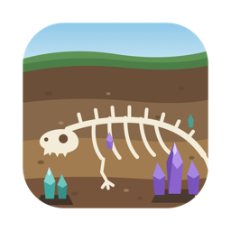

Strates

Atlas géologique
Roches, minéraux et argiles de France.
Ouvrir l'Atlas
Chaque roche se forme sous vos yeux, étape par étape.
Une argile qui gonfle en prenant l'eau.
Les cristaux en 3D, atome par atome.